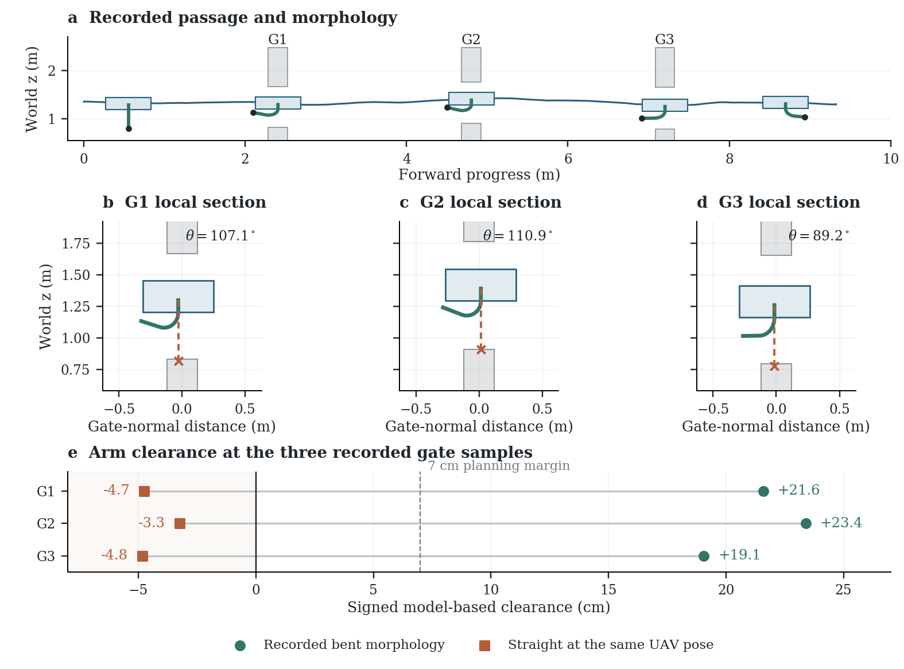
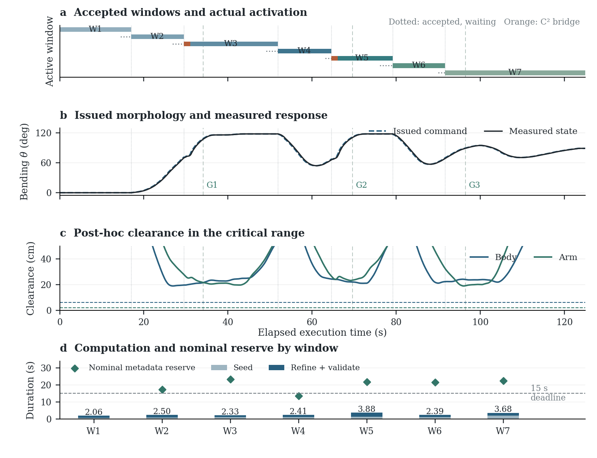

A · 三门任务 / 2026-11-17 19:51（北京时间）
弯臂如何改变穿门净空
用同一条 PX4/Gazebo 仿真记录对照弯臂与直臂，并把七个滚动窗口的接续还原到同一时间轴。
曲线与机制图

01三门局部截面与弯臂净空
按 G1 至 G3 对比实际弯曲形态与同一机身位姿下的直臂。适合先在汇报里放大单门，再对照三门。


02滚动窗口、下发指令与实际响应
沿记录的时间轴读取已下发指令与响应。七个窗口不能当成七次独立穿门。

视频回放
01三门侧视几何回放 · 4 倍速
归档时从当轮 964 帧状态重建；原记录约 125 秒。左侧是侧视轨迹，右侧是最近门截面，底部是弯曲角。画面不是机载相机录像。
论文与报告
论文中两张图所在页
阶段 A 保存的两页正文预览，适合核对图注与论述。
数据及运行记录
三门局部采样表
逐门给出位姿、弯曲角、净空及直臂反事实所需高度。
七个窗口的接续事件
窗口开始、接管时刻、规划耗时与接续类型。
指令与实际状态时序
下发形态与记录状态按时间戳配对。
几何回放原始输入
各帧的进度、高度、弯曲角和臂中心线。